2025 · Juara 1
Lomba Presentasi Resensi Buku (Tim)
Perpustakaan Candra Sastra · SMA Negeri 2 Negara
Berakar pada Budaya, Bersuara untuk Dunia.
Seorang pelajar yang terus belajar dan mengambil peran melalui literasi, kepemimpinan, dan pelestarian budaya.
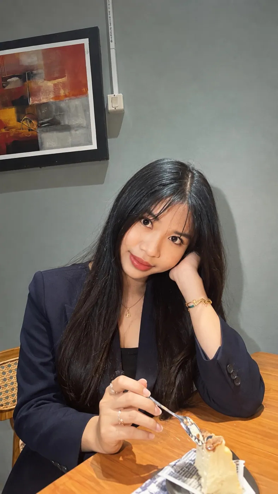
Saya Anak Agung Ayu Bunga Budiartini, dikenal sebagai Gunggek Bunga, pelajar SMA Negeri 2 Negara dengan ketertarikan pada literasi, budaya, dan kepemimpinan.
Bagi saya, masa muda bukan hanya tentang prestasi, tetapi juga tentang pengalaman, keberanian mengambil tanggung jawab, dan upaya memberikan manfaat bagi orang lain. Saya ingin menjadi bagian dari generasi yang mengenal akar budayanya sekaligus mampu menyuarakan gagasan kepada dunia.
LiteracyYouth & CultureLeadership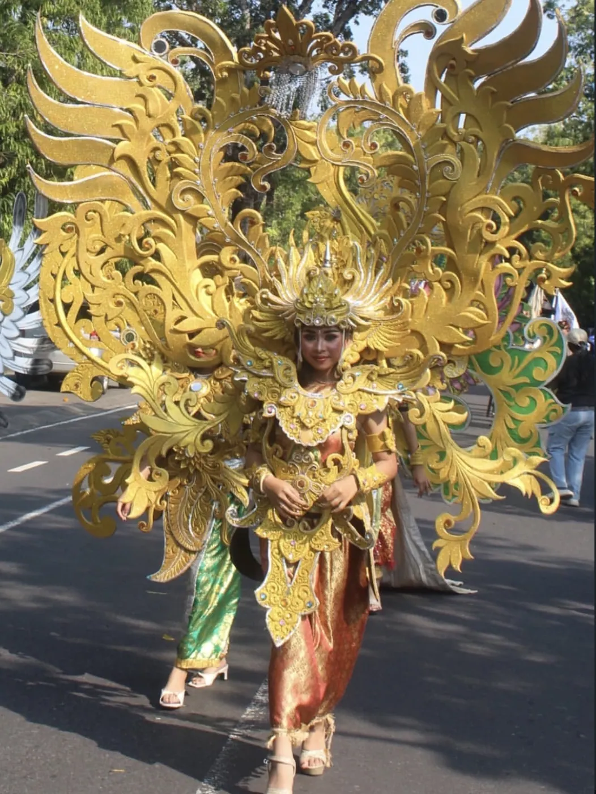
Perpustakaan Candra Sastra · SMA Negeri 2 Negara
Perpustakaan Candra Sastra · SMA Negeri 2 Negara
Prestasi dalam bidang pelestarian budaya.
Saya belajar bahwa kepemimpinan bukan sekadar jabatan, tetapi kemampuan mendengarkan, bekerja sama, dan bertanggung jawab.
Dokumentasi terpilih dari kegiatan yang saya ikuti dan kontribusi yang saya jalankan. Setiap kegiatan ditampilkan sesuai peran yang benar-benar saya lakukan.
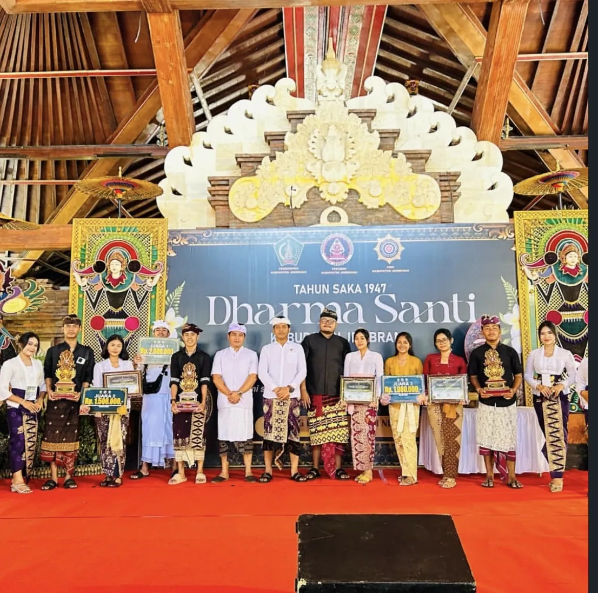
Mengajak generasi muda mengenal pura-pura di Jembrana melalui kreativitas video digital.
Instagram ↗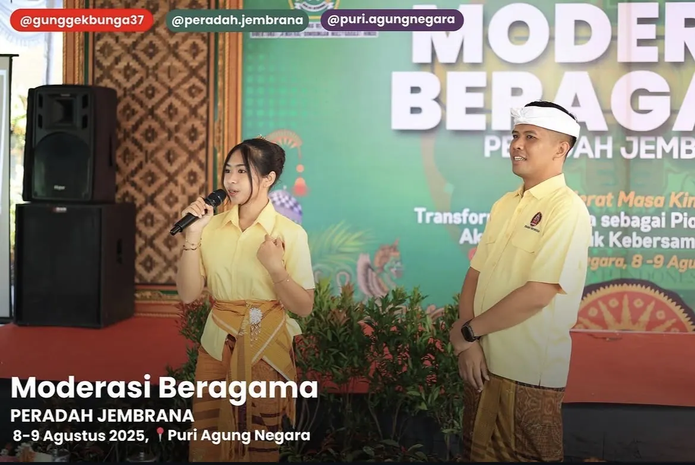
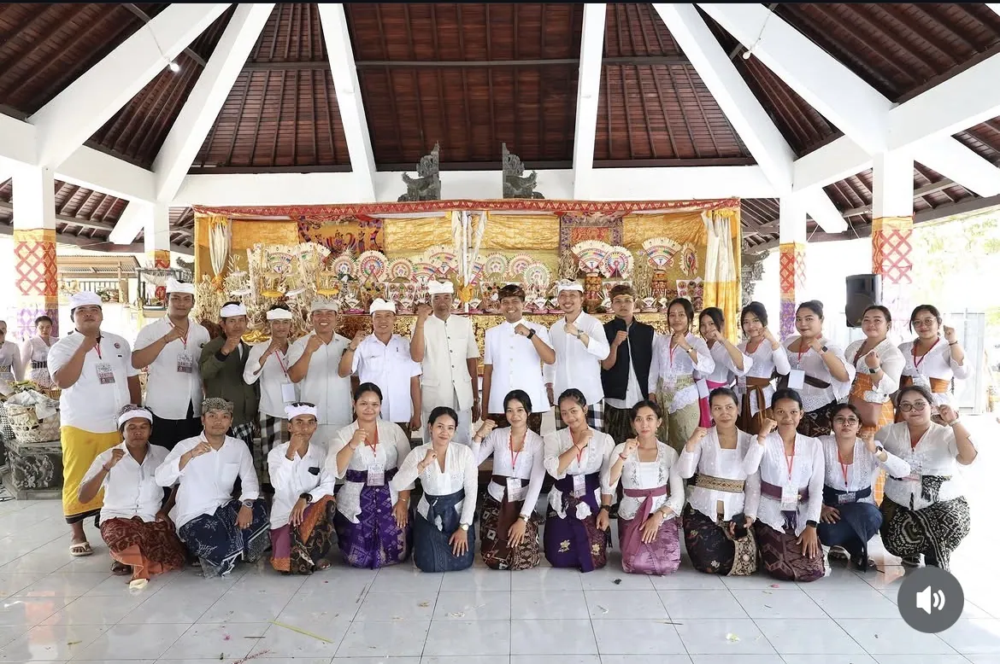
Terlibat dalam kegiatan pelayanan umat dan pelestarian tradisi Bali.
Instagram ↗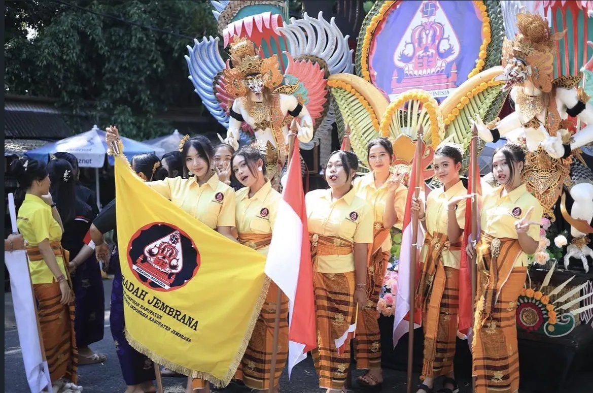
Bersama PERADAH Jembrana dalam kegiatan ekspresi dan pelestarian budaya.
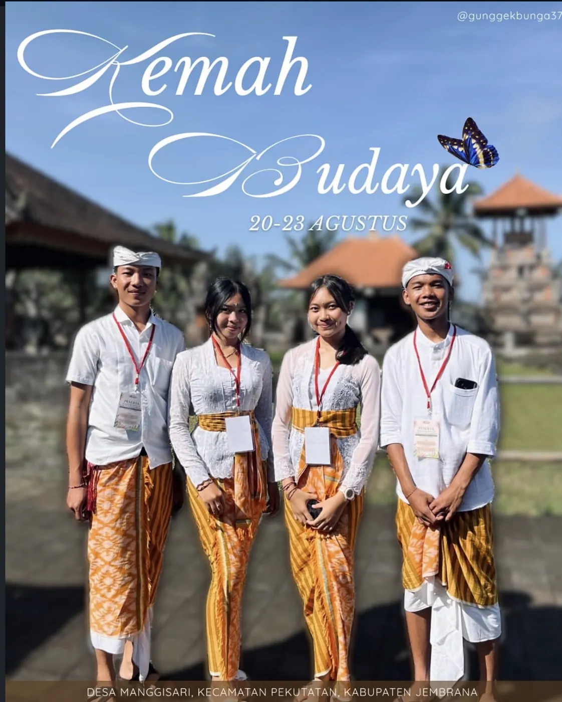
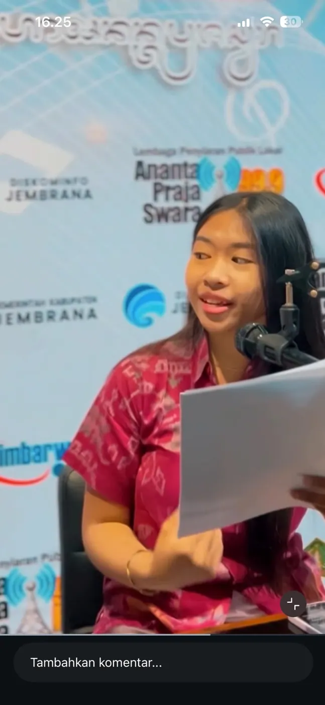
Local Roots. Global Voices.
Sebuah gagasan yang masih saya rancang untuk menghubungkan literasi, kreativitas, dan pelestarian budaya. AKSARA TALKS direncanakan sebagai webinar edukatif; AKSARA BERAKSI sebagai kegiatan edukasi budaya secara langsung bagi generasi muda.
Status: rencana pribadi, belum dilaksanakan.
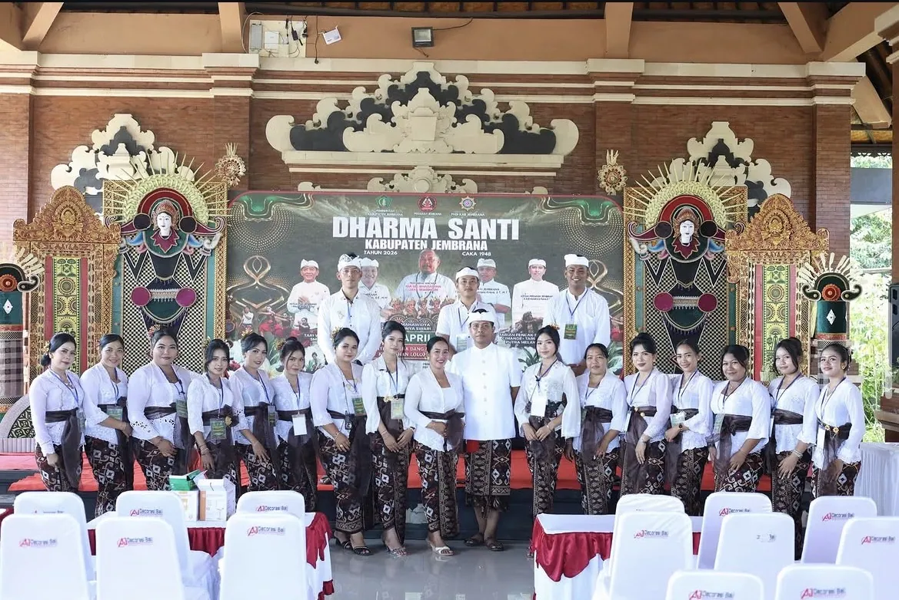
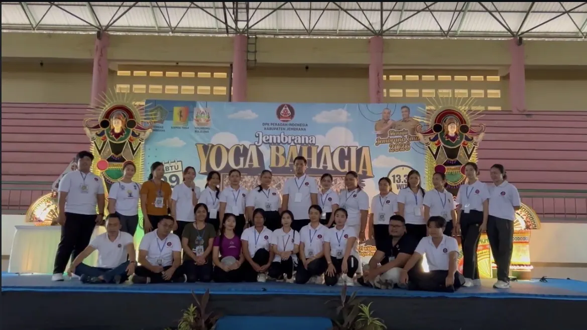
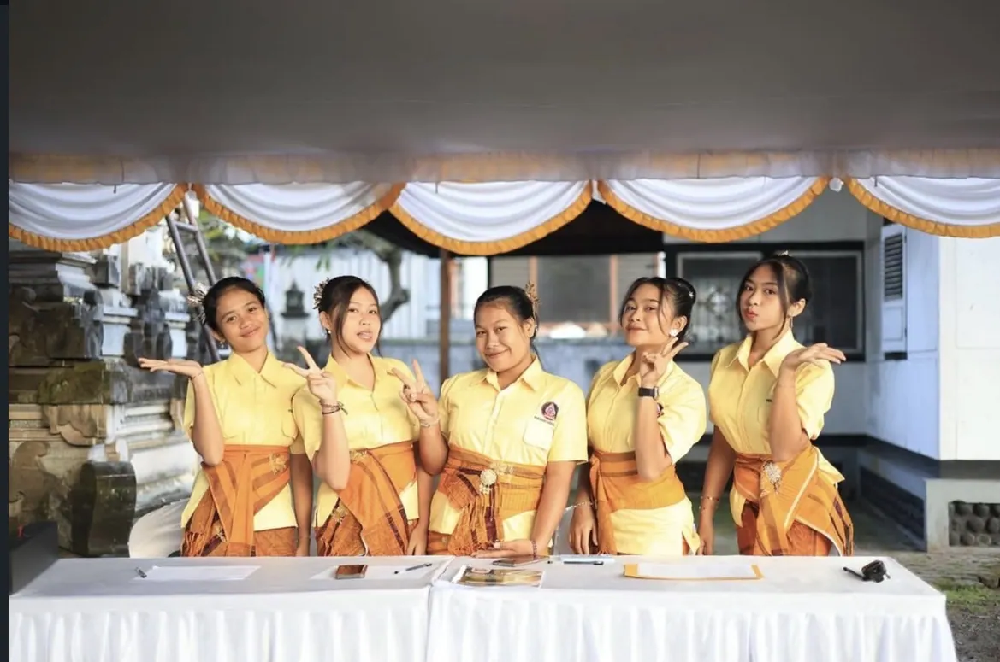
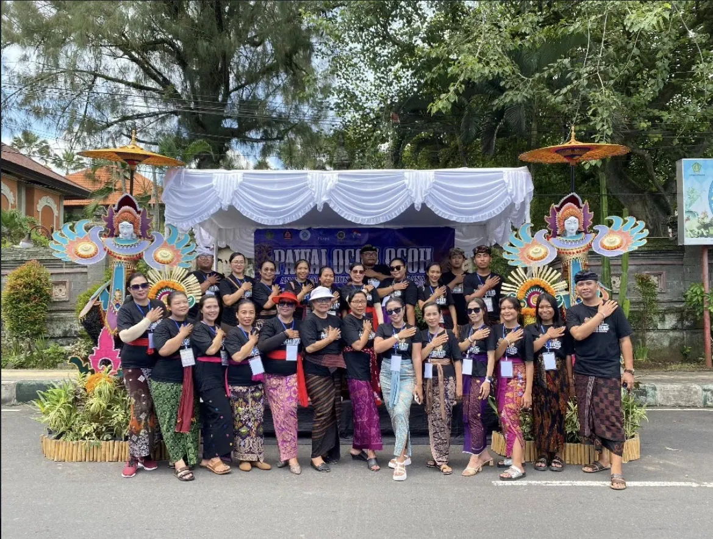
Dokumentasi pilihan dari perjalanan kegiatan organisasi, sosial, dan budaya.